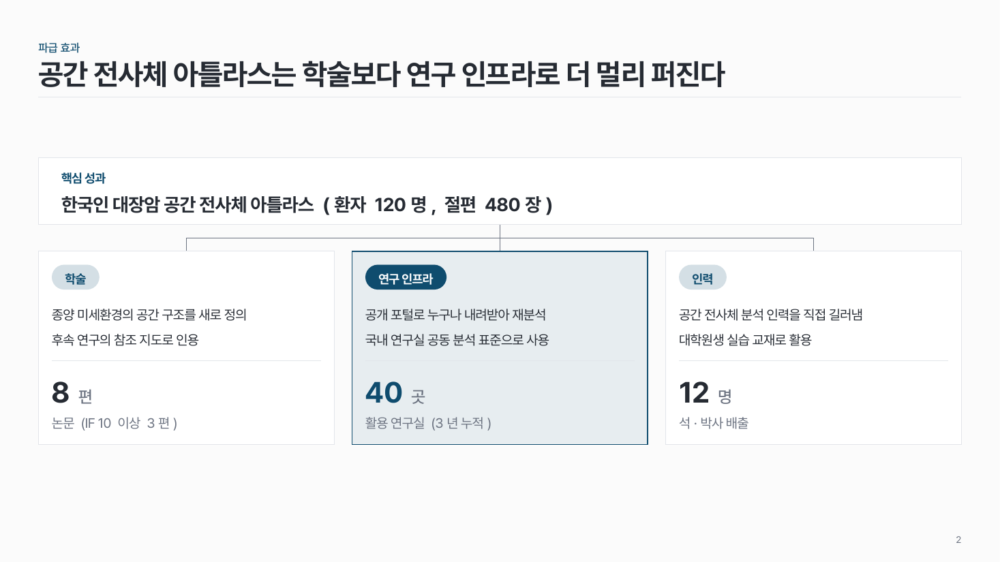
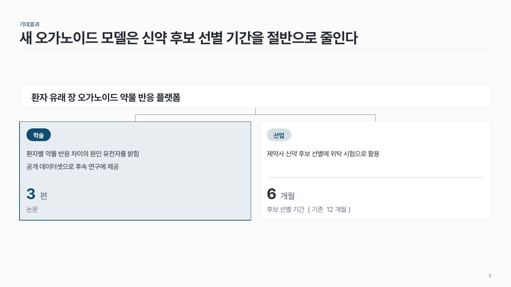

기대효과·파급 logic-05
핵심 성과 하나가 2–3개 영역으로 퍼지는 모양. 영역마다 근거 수치 하나.

이 시안
영역 3개 · 산업 영역 강조 + 결론 줄
슬라이드 제목: 암 유전체 분석 기술은 진단 현장의 비용을 가장 크게 줄인다
언제 쓰나
과제 발표의 마무리에서 성과가 어디에 쓰이는지 보일 때요. 학술 · 산업 · 사회, 또는 학술 · 연구 인프라 · 인력처럼 영역을 나눠요.
구성
- 맨 위 띠에 핵심 성과 한 문장.
- 아래에 영역 2–3칸, 띠에서 가는 선으로 이어요.
- 칸마다 영역 이름 → 기대효과 1–2문장 → 근거 수치 (논문 5편, 검사비 30% 절감).
- 가장 중요한 영역 하나만 강조.
지킬 것
- 근거 수치는 칸마다 하나, 같은 높이에.
- 문장은 25자 안팎.
하지 말 것
- 근거 없이 "크게 기여한다"만 쓰지 않아요.
- 세 영역을 똑같은 비중으로 꾸미지 않아요.
시안 비교
같은 내용을 옵션만 바꿔 그렸어요. 그림을 누르면 크게 보여요.
A영역 3개 · 산업 영역 강조 + 결론 줄
슬라이드 제목: 암 유전체 분석 기술은 진단 현장의 비용을 가장 크게 줄인다

B영역 3개 · 문장 두 개씩 · 띠 말머리
슬라이드 제목: 공간 전사체 아틀라스는 학술보다 연구 인프라로 더 멀리 퍼진다

C영역 2개 · 학술 강조
슬라이드 제목: 새 오가노이드 모델은 신약 후보 선별 기간을 절반으로 줄인다